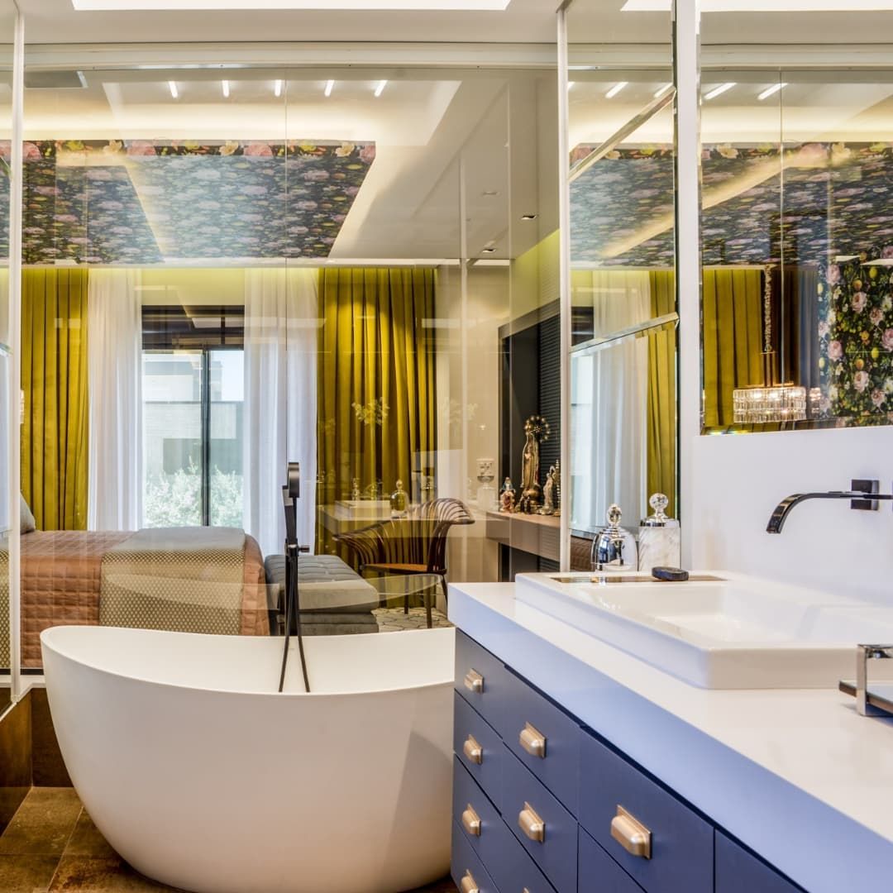
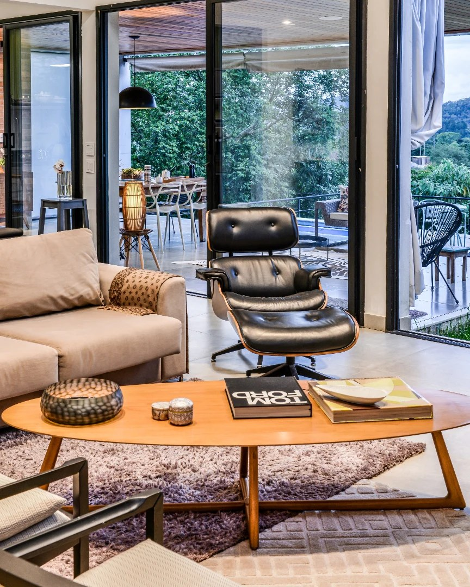
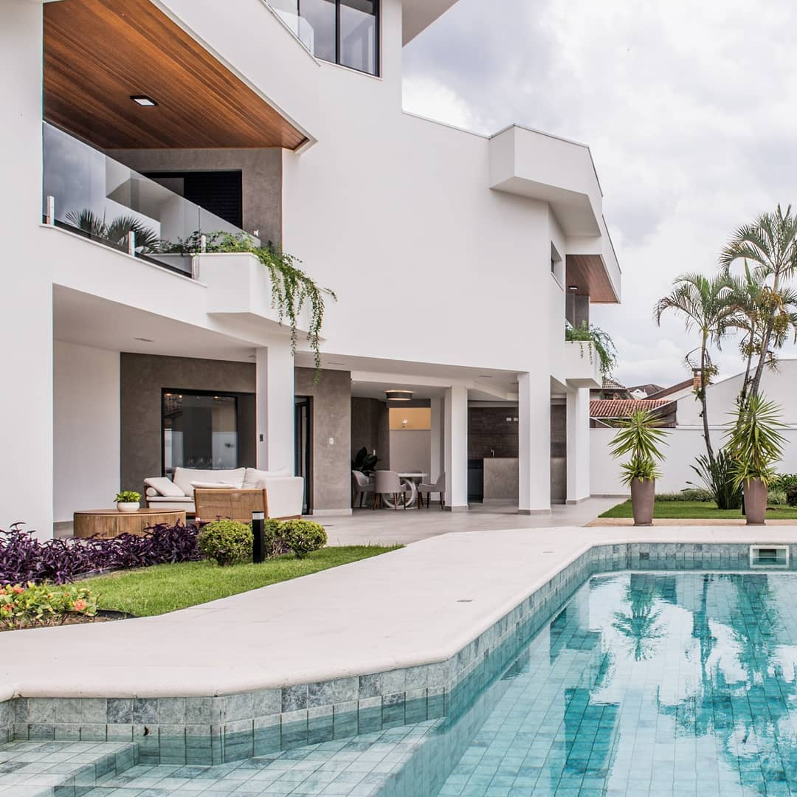
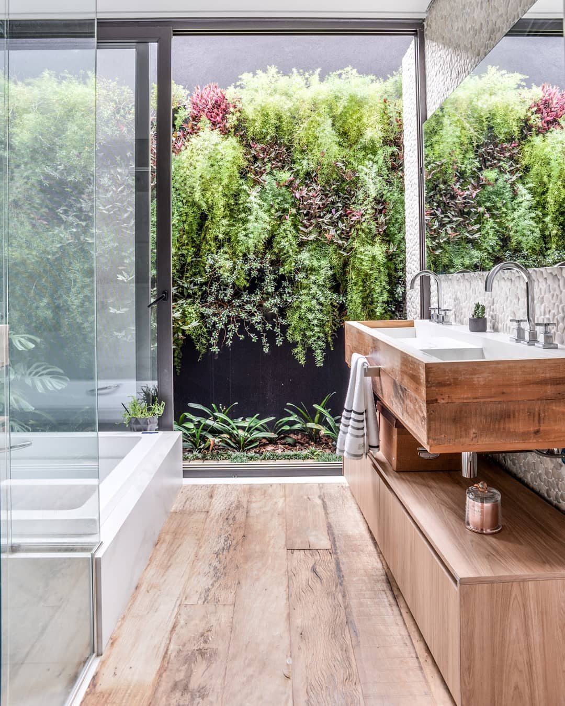
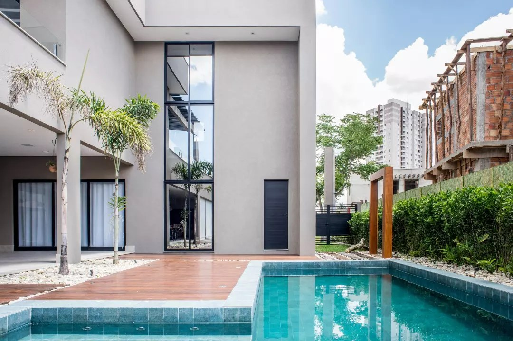
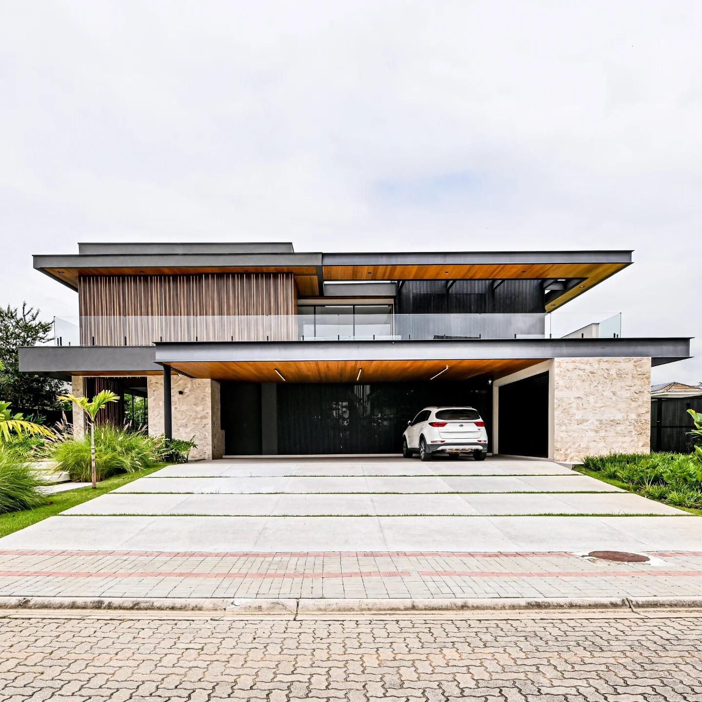

f/16
O lugar
Arquitetura, interiores e imóveis de alto padrão
Uma boa foto apresenta o projeto antes de qualquer palavra.











Quem projetou
- João GobboChácara Serimbura
- Santo ArquitetoBar e cozinha
- Lara AmadoSala de banho
- Dani CarneiroCozinha
- Viviane FortesSuíte
- Débora OliveiraResidência com piscina
- Laire Designer de InterioresPé-direito duplo
- Leia FonsecaSala de estar
- Otta AlbernazBanheiro jardim
Para quem
Arquitetos e designers
Ensaio completo do projeto: ambientes, detalhes, retrato profissional e recortes para publicação.
Construtoras
Obra entregue e decorado, com linguagem única para o lançamento, o estande e o portfólio.
Imobiliárias e proprietários
O imóvel preparado, na melhor hora de luz, pronto para anúncio e apresentação.